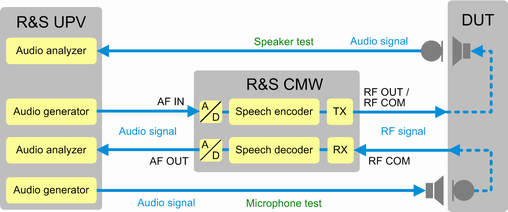
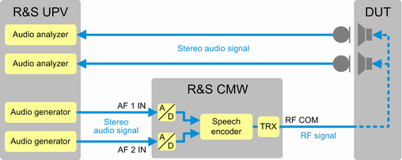

- (Mono) "External Analog Speech Analysis"
- (Mono) "External Digital Speech Analysis"
- "Stereo External Analog Speech Analysis"
- "Stereo External Digital Speech Analysis"
The typical test setup for mono tests is similar to a "Microphone- and Speaker Test" setup. But the audio generators and measurements are now located in an external audio analyzer supporting speech quality analysis, for example the R&S UPV or the R&S UPP.
The audio generators and measurements of the R&S CMW do not support speech analysis. For the digital scenarios, they are not used at all. For the analog scenarios, they are only used for D/A and A/D conversion.
So the setup comprises an external audio analyzer (e.g. R&S UPV), an R&S CMW, the DUT and in the case of acoustical coupling, an artificial head. The audio board must be equipped with a speech codec (R&S CMW-B405A). A single codec is sufficient even for the stereo scenarios. An R&S CMW signaling application is used to set up a speech connection to the DUT.

To test the speech quality of the speaker path, an external audio generator provides an audio signal that is routed to an AF IN or SPDIF IN connector. The R&S CMW encodes the audio signal, modulates it on the RF and routes the RF signal to the DUT. The DUT demodulates and decodes the signal and sends the audio signal to its loudspeaker. The artificial ear listens to the loudspeaker of the DUT and provides the resulting audio signal to the external audio analyzer.
To test the speech quality of the microphone path, an external audio generator provides an audio signal that is routed to the artificial mouth. The DUT listens to the artificial mouth, encodes the audio signal, modulates it on the RF and transmits the RF signal to the R&S CMW. The R&S CMW demodulates and decodes the signal and routes it via an AF OUT or SPDIF OUT connector to the external audio analyzer.
If supported by the external audio analyzer, it is recommended to use a digital setup (use the SPDIF connectors and the scenario "External Digital Speech Analysis"). A digital setup provides higher accuracy than an analog setup.
The stereo scenarios support the speaker path and the microphone path, like the mono scenarios. But often only the speaker path is relevant for stereo tests. An example is the test of Bluetooth headphones. The following figure illustrates the setup. A bidirectional Bluetooth signaling connection links the Bluetooth signaling application on the R&S CMW and the DUT. A stereo audio signal is transported from the external audio analyzer via the R&S CMW to the headset and back to the audio analyzer.

The stereo scenarios use both audio software instances. You cannot use another scenario in parallel to a stereo scenario.